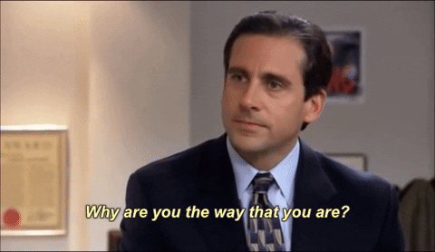

Display Inline-Block
Inline-Block elements display in the inline direction, that is in the direction words are displayed in a sentence, so left to right. Inline elements will be next to each other until they run out of space on the line, then they will create a new line.
Common Display Inline-Block Elements
Images
Images are display inline-block by default that is why they fill space from left to right rather than top to bottom. Also images line up on their baseline or bottom of the image. This can be changed with the CSS property vertical-align.